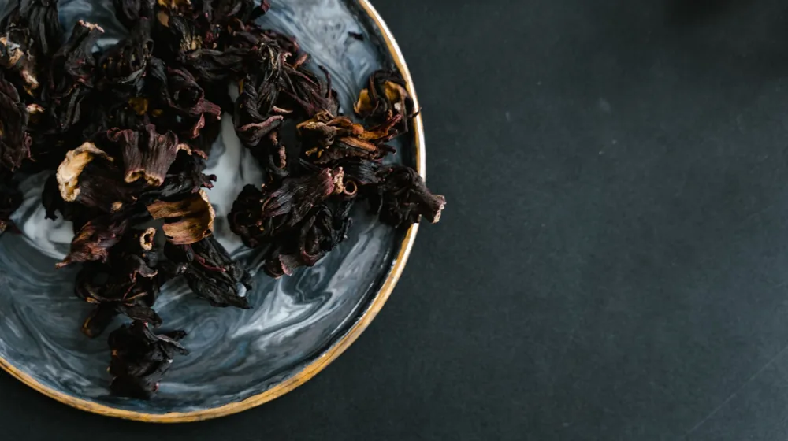

한방 웰니스, 초보자도 일상에서 쉽게 시작하는 법 (feat. 핵심 가이드)
사진: 정규송 Nui MALAMA / Pexels (무료 이미지, 출처 표기)
한방 웰니스, 어렵게만 느껴졌다면 이것부터 확인하세요!

건강한 삶에 대한 관심이 높아지면서 '한방 웰니스'라는 단어를 자주 접하지만, 막상 시작하려니 어렵게 느껴질 수 있습니다. 어디서부터 손대야 할지 고민하는 초보자분들을 위해 한방 웰니스의 기본부터 실생활 적용법까지 친절하게 안내해 드립니다. 이 글을 통해 나에게 맞는 한방 웰니스 루틴을 찾아보세요.
한방 웰니스, 무엇이고 왜 중요할까요?
한방 웰니스는 몸과 마음의 균형을 중시하는 한의학적 관점을 바탕으로 건강 증진과 삶의 질 향상을 목표로 하는 활동입니다. 서양의 웰니스가 주로 신체적 활동이나 심리 치유에 집중한다면, 한방 웰니스는 개인의 체질과 기혈 순환을 고려한 '맞춤형' 접근이 특징입니다.
이는 단순한 질병 치료를 넘어 질병 예방, 스트레스 관리, 면역력 강화 등 전인적 건강을 추구합니다. 건강한 식습관, 명상, 생활 습관 개선 등을 통해 몸과 마음의 조화를 이루는 데 중점을 둡니다. 이처럼 개개인의 상태를 깊이 이해하고 접근하는 것이 한방 웰니스의 핵심입니다.
나에게 맞는 한방 웰니스 찾기: 주요 프로그램 비교
한방 웰니스는 개개인의 체질과 건강 상태에 따라 다양한 형태로 실천될 수 있습니다. 아래 표에서 주요 한방 웰니스 프로그램의 특징과 추천 대상을 확인하여 자신에게 적합한 방식을 찾아보세요. 한국관광공사에 따르면 국내에는 다양한 한방 웰니스 체험 시설이 존재합니다.
일상에서 실천하는 한방 웰니스 방법
거창한 시작보다는 일상에서 꾸준히 실천할 수 있는 작은 습관부터 들이는 것이 중요합니다. 다음은 초보자도 쉽게 따라 할 수 있는 한방 웰니스 실천법입니다.
- 몸 상태에 맞는 한방차 마시기: 몸이 찬 사람은 생강차, 잦은 소화 불량에는 매실차 등 자신의 증상이나 체질에 맞는 한방차를 선택하여 꾸준히 마십니다. 따뜻하게 마시는 것이 좋습니다.
- 간단한 지압점 마사지: 손의 '합곡혈'(엄지와 검지 사이), 발의 '태충혈'(엄지발가락과 검지발가락 사이) 등 혈자리를 가볍게 지압하여 혈액 순환을 돕고 피로를 풀어줍니다.
- 따뜻한 반신욕 또는 족욕: 일주일에 2~3회, 40도 내외의 따뜻한 물에 20분 정도 반신욕이나 족욕을 합니다. 한약재 팩이나 허브를 첨가하면 효과를 높일 수 있습니다.
- 오행에 따른 제철 음식 섭취: 제철 채소와 과일을 골고루 섭취하며, 오행(목, 화, 토, 금, 수)의 균형을 맞춘 식단으로 몸의 조화를 유지합니다. (예: 쓴맛은 심장, 신맛은 간에 좋다고 알려져 있습니다.)
- 하루 10분 심신 안정 명상: 조용한 공간에서 눈을 감고 편안하게 호흡하며, 마음을 가라앉히는 시간을 갖습니다. 이는 스트레스 해소에 큰 도움이 됩니다.
초보자를 위한 한방 웰니스 시작 전 주의할 점
한방 웰니스를 시작하기 전 몇 가지 사항을 고려하면 더욱 안전하고 효과적으로 실천할 수 있습니다. 특히 개인의 건강 상태와 체질은 매우 중요합니다.
- 정확한 체질 진단: 한의학에서는 개인의 체질에 따라 적합한 치료법이나 음식이 달라집니다. 전문 한의원을 방문하여 자신의 체질을 정확하게 진단받는 것이 중요합니다.
- 점진적인 접근: 한 번에 모든 것을 바꾸려 하기보다 작은 습관부터 시작하여 몸이 적응할 시간을 주는 것이 좋습니다. 욕심을 내면 오히려 역효과가 날 수 있습니다.
- 전문가와의 상담: 특정 질환을 앓고 있거나 약을 복용 중이라면, 한방 웰니스 프로그램을 시작하기 전에 반드시 한의사나 주치의와 상담하세요. 대한한의사협회는 개인별 맞춤 상담의 중요성을 강조합니다.
- 검증된 정보 확인: 검증되지 않은 민간요법이나 과장된 효과를 내세우는 정보는 주의해야 합니다. 2026년 08월 기준으로도 정보의 홍수 속에서 공식 기관이나 전문가의 견해를 확인하는 것이 안전합니다.
자주 묻는 질문
한방 웰니스에 대해 초보자들이 자주 묻는 질문들을 모아봤습니다.
Q1: 한방 웰니스 효과는 언제부터 볼 수 있나요?
A1: 한방 웰니스는 단기적인 처방보다는 꾸준한 실천을 통해 몸과 마음의 균형을 찾아가는 과정입니다. 개인차가 크지만, 보통 최소 한두 달 이상 꾸준히 실천했을 때 서서히 변화를 느끼기 시작합니다. 매일 조금씩이라도 지속하는 것이 중요합니다.
Q2: 한방 웰니스는 비용이 많이 들지 않을까요?
A2: 한의원 진료나 전문 스파 프로그램은 비용이 발생할 수 있지만, 모든 한방 웰니스가 고비용인 것은 아닙니다. 일상에서 실천할 수 있는 한방차, 지압, 명상 등은 적은 비용으로도 충분히 시작할 수 있습니다. 자신의 예산에 맞춰 방법을 선택하는 것이 현명합니다.
Q3: 특정 질환이 있어도 한방 웰니스를 할 수 있나요?
A3: 네, 가능하지만 반드시 전문가의 상담이 필요합니다. 질환의 종류와 상태에 따라 적합한 한방 웰니스 방법이 다르므로, 임의로 판단하기보다는 한의사나 의사와 상의하여 안전하게 진행하는 것이 중요합니다.
🔗 이 글도 함께 보면 좋아요: 종가 내림음식 프라이빗 다이닝, 특별한 경험 쉽게 예약하는 5단계 가이드
관련 추천 상품
한방차 세트, 한방 아로마 오일, 지압 도구 관련 인기 상품 보러가기
이 포스팅은 쿠팡 파트너스 활동의 일환으로, 이에 따른 일정액의 수수료를 제공받습니다.